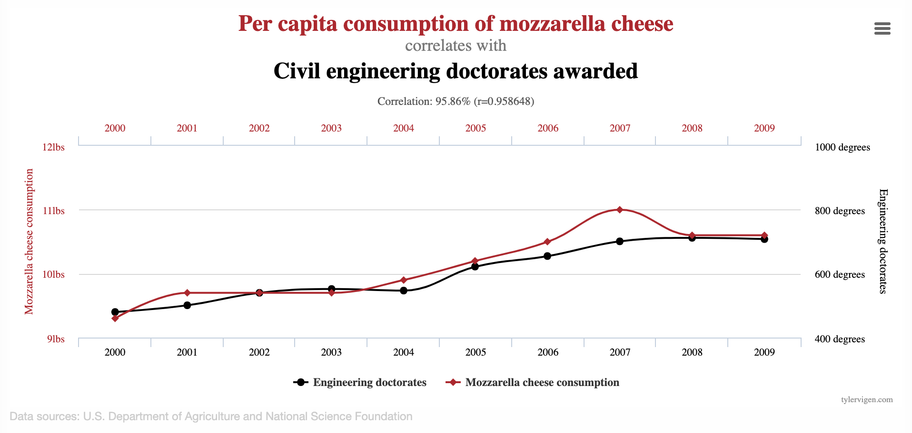

Linear Regression
Lecture 14
While you wait…
Go to your
aeproject in RStudio.Make sure all of your changes up to this point are committed and pushed, i.e., there’s nothing left in your Git pane.
Click Pull to get today’s application exercise file: ae-12-modeling-penguins.qmd.
Wait till the you’re prompted to work on the application exercise during class before editing the file.
Correlation vs. causation
Spurious correlations
Spurious correlations

Linear regression with a single predictor
Data overview
movie_scores |>
select(critics, audience)# A tibble: 146 × 2
critics audience
<int> <int>
1 74 86
2 85 80
3 80 90
4 18 84
5 14 28
6 63 62
7 42 53
8 86 64
9 99 82
10 89 87
# ℹ 136 more rowsData visualization
Data visualization: linear model

Data visualization: linear model

# A tibble: 2 × 5
term estimate std.error statistic p.value
<chr> <dbl> <dbl> <dbl> <dbl>
1 (Intercept) 32.3 2.34 13.8 4.03e-28
2 critics 0.519 0.0345 15.0 2.70e-31Data visualization: linear model
# A tibble: 2 × 5
term estimate std.error statistic p.value
<chr> <dbl> <dbl> <dbl> <dbl>
1 (Intercept) 32.3 2.34 13.8 4.03e-28
2 critics 0.519 0.0345 15.0 2.70e-31# A tibble: 1 × 1
r
<dbl>
1 0.781Prediction: linear model
# A tibble: 146 × 4
critics audience .pred .resid
<int> <int> <dbl> <dbl>
1 74 86 70.7 15.3
2 85 80 76.4 3.60
3 80 90 73.8 16.2
4 18 84 41.7 42.3
5 14 28 39.6 -11.6
6 63 62 65.0 -2.99
7 42 53 54.1 -1.10
8 86 64 76.9 -12.9
9 99 82 83.7 -1.66
10 89 87 78.5 8.52
# ℹ 136 more rowsLinear Regression: How R Did It
Regression model
\[ Y \;=\; \mathbf{Model} \;+\; \text{Error} \]
\[ =\; \mathbf{f(X)} \;+\; \epsilon \]
\[ =\; \mu_{Y\mid X} \;+\; \epsilon \]
Regression model
\[ \begin{aligned} Y &= \color{#325b74}{\textbf{Model}} + \text{Error} \\[8pt] &= \color{#325b74}{\mathbf{f(X)}} + \epsilon \\[8pt] &= \color{#325b74}{\boldsymbol{\mu_{Y|X}}} + \epsilon \end{aligned} \]
Simple linear regression
Use simple linear regression to model the relationship between a quantitative outcome (\(Y\)) and a single quantitative predictor (\(X\)).
. . .
\[\Large{Y = \beta_0 + \beta_1 X + \epsilon}\]
- \(Y\) : True \(Y\) values
- \(\beta_1\): True slope of the relationship between \(X\) and \(Y\)
- \(\beta_0\): True intercept of the relationship between \(X\) and \(Y\)
- \(\epsilon\): Error (random noise)
Simple linear regression
Use simple linear regression to model the relationship between a quantitative outcome (\(Y\)) and a single quantitative predictor (\(X\)).
. . .
\[\Large{\hat{Y} = b_0 + b_1 X}\]
- \(\hat{Y}\) : Fitted \(Y\) values
- \(b_1\): Estimated slope of the relationship between \(X\) and \(Y\)
- \(b_0\): Estimated intercept of the relationship between \(X\) and \(Y\)
- No error term!
Choosing values for \(b_1\) and \(b_0\)
Residuals
\[\small{\text{residual} = \text{observed} - \text{predicted} = y - \hat{y}}\]
Notation
We have \(n\) observations (generally, the number of rows in a df)
-
\(i^{th}\) observation (\(i\) from \(1\) to \(N\)):
\(y_i\) : \(i^{th}\) outcome
\(x_i\) : \(i^{th}\) explanatory variable
\(\hat{y}\) : \(i^{th}\) predicted outcome
\(e\) : \(i^{th}\) residual
Notation: Example
Back to the movies: audience scores predicted by critic scores.
# A tibble: 146 × 4
critics audience .pred .resid
<int> <int> <dbl> <dbl>
1 74 86 70.7 15.3
2 85 80 76.4 3.60
3 80 90 73.8 16.2
4 18 84 41.7 42.3
5 14 28 39.6 -11.6
6 63 62 65.0 -2.99
7 42 53 54.1 -1.10
8 86 64 76.9 -12.9
9 99 82 83.7 -1.66
10 89 87 78.5 8.52
# ℹ 136 more rows\(x_1 = 74\)
\(y_1 = 86\)
\(\hat{{y}}_1 \approx 71\)
\(e_1 \approx 15\)
Least squares line
- The residual for the \(i^{th}\) observation is
\[e_i = \text{observed} - \text{predicted} = y_i - \hat{y}_i\]
. . .
- The sum of squared residuals is
\[e^2_1 + e^2_2 + \dots + e^2_n\]
. . .
- The least squares line is the one that minimizes the sum of squared residuals
Least squares line

Least squares line
movies_fit <- linear_reg() |>
fit(audience ~ critics, data = movie_scores)
tidy(movies_fit)# A tibble: 2 × 5
term estimate std.error statistic p.value
<chr> <dbl> <dbl> <dbl> <dbl>
1 (Intercept) 32.3 2.34 13.8 4.03e-28
2 critics 0.519 0.0345 15.0 2.70e-31. . .
Let’s interpret this!
Slope and Intercept
Interpreting slope & intercept
\[\widehat{y} = b_0 + b_1 \times x\]
Slope: For every one increase in the value of \(x\), we expect \(y\) to be higher by \(b_1\), on average.
Intercept: If \(x = 0\), we expect \(y = b_0\)
Interpreting slope & intercept
\[\widehat{\text{audience}} = 32.3 + 0.519 \times \text{critics}\]
- Slope: For every one point increase in the critics score, we expect the audience score to be higher by 0.519 points, on average.
- Intercept: If the critics score is 0 points, we expect the audience score to be 32.3 points.
Is the intercept meaningful?
✅ The intercept is meaningful in context of the data if
- the predictor can feasibly take values equal to or near zero or
- the predictor has values near zero in the observed data
. . .
🛑 Otherwise, it might not be meaningful!
Properties of least squares regression
Slope (\(b_1\)) has the same sign as the correlation coefficient (\(r\)): \(b_1 = r \frac{s_Y}{s_X}\)
The regression line goes through the center of mass point (the coordinates corresponding to average \(X\) and average \(Y\))
Sum of the residuals is zero
Application exercise
ae-12-modeling-penguins
Go to your ae project in RStudio.
If you haven’t yet done so, make sure all of your changes up to this point are committed and pushed, i.e., there’s nothing left in your Git pane.
If you haven’t yet done so, click Pull to get today’s application exercise file: ae-12-modeling-penguins.qmd.
Work through the application exercise in class, and render, commit, and push your edits.
Regression with Categorical Variables
Regression with Categorical Variables
What does \(b_0 +b_1*x\) even mean when \(x\) is categorical ???
. . .
Suppose variable island can take values A, B, or C. We want to model variable mass based on island.
. . .
We tell R to fit mass ~ island … now what?
. . .
We get dummy variables!!!
Dummy Variables
| mass | island |
|---|---|
| 10 | A |
| 30 | C |
| 20 | B |
| 15 | A |
Dummy Variables
| mass | island |
|---|---|
| 10 | A |
| 30 | C |
| 20 | B |
| 15 | A |
| mass | island | A | B | C |
|---|---|---|---|---|
| 10 | A | |||
| 30 | C | |||
| 20 | B | |||
| 15 | A |
. . .
Important
In a given row, only one of the dummy variables for a given categorical variable can equal 1.
What will a regression output look like?
\[ mass = b_0 + b_2 * B + b_3 *C \]
. . .
What is the estimated weight of a penguin from island A?
. . .
What is the estimated weight of a penguin from island B?
. . .
What is the estimated weight of a penguin from island C?
. . .